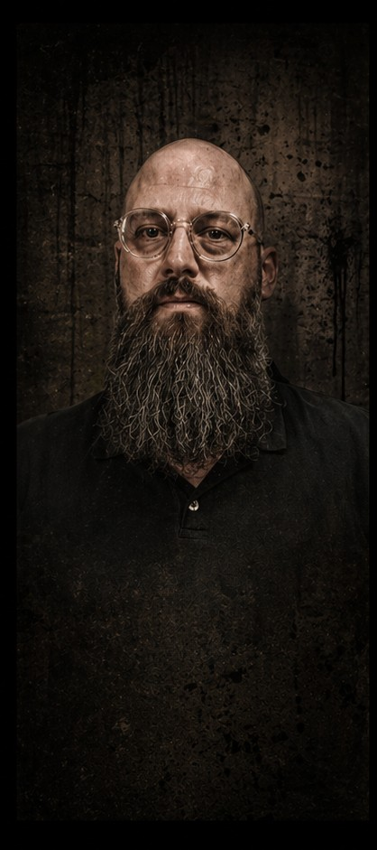
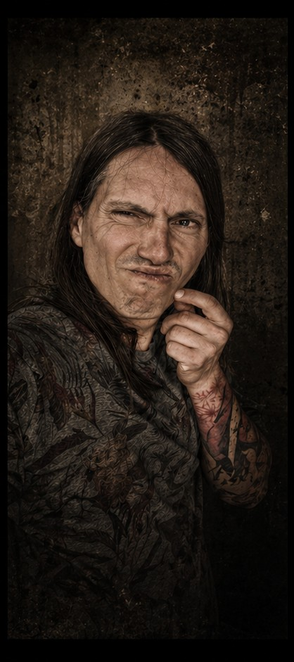
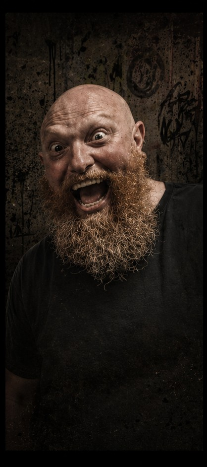
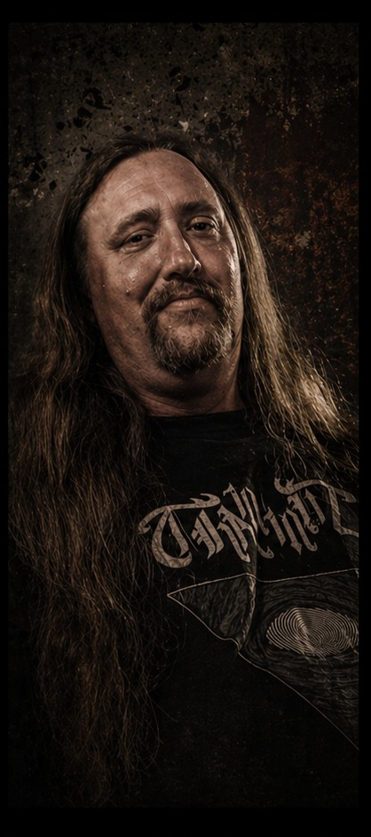

Big Daddy’s Breakfast Voodoo was never built in a straight line. It grew out of jam sessions where bad ideas turned out right and riffs refused to leave. Quite often, rhythms and styles were better felt rather than being thought through. Somewhere in the swamp where StonerBlues rears its ugly head, Mike (guitar & vocals), Peter (bass), and Bart (drums) found a sound that stuck. When Peter could no longer continue playing with the band in 2024, Erik stepped in as his replacement in 2025. Big shoes to fill, but the band stays on its old winding, bumpy road, continuing to create new stuff without slowing down.
Since 2013, we have been shaping songs the same way we live them... hands-on, instinct-driven, and slightly unhinged. Hand-built amps, guitars, and pedal boards feed a blues core that is more than frequently invaded by stoner rock, funk, punk, and whatever crawls out of the mud gets pulled into the mix. Nothing is planned too far ahead, and nothing is polished to death. StonerBlues, which means absolutely nothing, seemed like a fitting name to define the genre.
On stage and on record, the music comes straight from lived experience: workdays, road miles, family chaos, bad choices, hindsight, and the occasional revelation. Playing regularly since 2015 in bars, motorcycle gatherings, and festivals, Big Daddy’s Breakfast Voodoo delivers a cure for predictable blues.
Late in the COVID pandemic, we were asked to create a song and a soundscape for the short film Grillabend by Hubrecht L. Brand and Sirvan Marogy. Doomed to Fail was born, and since its first screening in 2026 we can now call ourselves musicians, comic book creators, board game designers, AND movie music composers, haha.